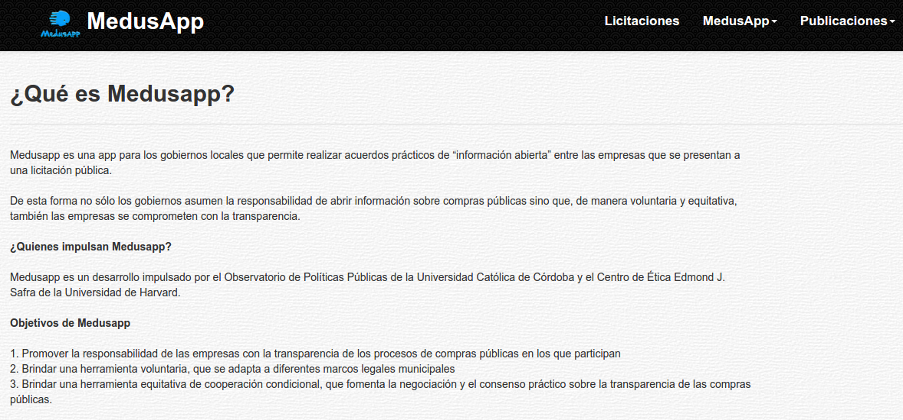

Documentación de MedusApp¶
Los documentos incluidos estan pensados para la correcta utilizacion de la plataforma Medusapp para los diferentes tipos de usuario.
Medusapp entiende como posible usuarios del sistema a:

- Municipios que deseen transparentar sus licitaciones
- Observadores especializados en controlar estos procesos
- Empresas participantes de licitaciones o concursos de precios
- Ciudadanos u organizaciones con intenciones de colaborar o conocer estos procesos públicos
Indice: